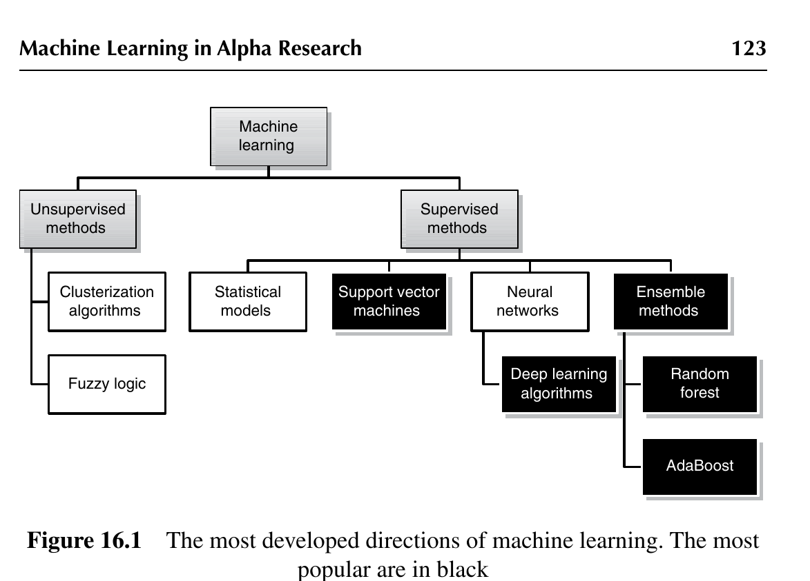
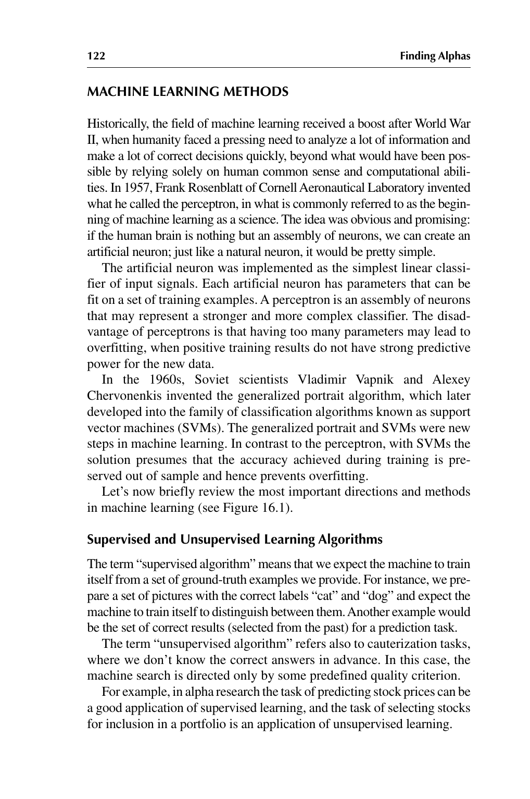

원저: 『Finding Alphas』 2판 (Wiley, 2020), Chapter 16 — Machine Learning in Alpha Research
저자: Michael Kozlov · Part II 설계와 평가
성격: 학습용 전문 번역 노트 (허가받은 개인 학습 자료)
지난 수십 년간 머신러닝은 대규모 데이터셋으로부터 정보를 추출해야 하는 거의 모든 작업에서 일반적으로 쓰이는 도구가 되었다. 알파 리서치에서는 다음과 같은 몇 가지 흔한 문제들을 머신러닝 방법론으로 풀 수 있다:
• 회귀(regression) 문제: Y와 X가 정량적 변수이고, Y가 함수 Y = F(X)에 의해 추론된다. • 분류(classification) 문제: Y가 정성적 변수이고, 정량적 변수 X로부터 추론된다. • 군집화(cauterization) 문제: 정량적 변수 X를 관찰하여 이를 유사한 특징을 가진 그룹들로 분류한다.
이 장에서는 이러한 문제들을 다루는 데 가장 널리 쓰이는 기법들을 소개한다.
알파 리서치에서 중요한 것은 과거에 일어난 일을 완벽하게 서술하는 것이 아니라, 미래를 예측함에 있어 가능한 한 정확하는 것이다. 따라서 우리는 다음과 같은 딜레마에 직면한다. 지나치게 복잡한 모델은 완벽한 캘리브레이션을 가능하게 할 수 있지만 과적합(overfitting)으로 이어져 예측의 질이 나빠질 수 있고, 반면 표본 데이터에 매우 들어맞지 않는 지나치게 단순한 모델은 미래 행동을 더 정확하게 예측할 가망이 전혀 없다.
Finding Alphas: 트레이딩 전략 구축을 위한 정량적 접근, 제2판. Igor Tulchinsky 외 및 WorldQuant Virtual Research Center 편저. © 2020 Tulchinsky 외, WorldQuant Virtual Research Center. 2020년 John Wiley & Sons, Ltd. 간행.
역사적으로 머신러닝 분야가 큰 추진력을 얻은 것은 제2차 세계대전 이후였다. 당시 인류는 인간의 상식과 계산 능력에만 의존해서는 감당할 수 없을 만큼 많은 정보를 분석하고 많은 올바른 결정을 신속하게 내려야 하는 절박한 필요에 직면해 있었다. 1957년 Cornell Aeronautical Laboratory의 Frank Rosenblatt은 퍼셉트론(perceptron)이라 부른 것을 발명했는데, 이것이 흔히 과학으로서의 머신러닝의 시작으로 일컬어진다. 그 생각은 자명하고 유망했다. 인간의 뇌가 뉴런들의 집합에 지나지 않는다면 우리는 인공 뉴런을 만들 수 있고, 자연 뉴런과 마찬가지로 그것은 꽤 단순할 것이라는 것이다.
인공 뉴런은 입력 신호에 대한 가장 단순한 선형 분류기(linear classifier)로 구현되었다. 각 인공 뉴런에는 훈련 예제 집합에 맞춰 적합시킬 수 있는 파라미터들이 있다. 퍼셉트론은 뉴런들의 집합으로서 더 강력하고 복잡한 분류기를 표현할 수 있다. 퍼셉트론의 단점은 파라미터가 너무 많으면 과적합으로 이어질 수 있다는 것이다. 과적합이란 훈련에서 얻은 좋은 결과가 새 데이터에 대해서는 강한 예측력을 갖지 못하는 상황이다.
1960년대에 소련 과학자 Vladimir Vapnik과 Alexey Chervonenkis는 일반화 초상(generalized portrait) 알고리즘을 발명했고, 이는 훗날 서포트 벡터 머신(support vector machines, SVM)으로 알려진 분류 알고리즘의 계열로 발전했다. 일반화 초상과 SVM은 머신러닝에서의 새로운 진전이었다. 퍼셉트론과 대조적으로, SVM에서의 해는 훈련 중에 달성된 정확도가 표본 밖(out of sample)에서도 보존된다고 전제하며, 따라서 과적합을 방지한다.
이제 머신러닝의 가장 중요한 방향들과 방법들을 간략히 훑어보자(그림 16.1 참조).

"지도(supervised) 알고리즘"이라는 용어는, 우리가 제공하는 정답(ground-truth) 예제 집합을 가지고 기계가 스스로 훈련하기를 기대한다는 뜻이다. 예컨대 우리는 "고양이"와 "개"라는 올바른 레이블이 붙은 사진 집합을 준비하고, 기계가 스스로 이 둘을 구별하도록 훈련하기를 기대한다. 또 다른 예로는 예측 과제에 대한 (과거에서 선택된) 올바른 결과들의 집합을 들 수 있다.
"비지도(unsupervised) 알고리즘"이라는 용어는 또한 군집화 과제를 가리키는데, 이 경우 우리는 정답을 미리 알지 못한다. 이때 기계의 탐색은 오직 사전에 정의된 어떤 품질 기준에 의해서만 방향이 정해진다.
예를 들어 알파 리서치에서 주가 예측 과제는 지도 학습의 좋은 적용처가 될 수 있고, 포트폴리오 편입 종목을 선별하는 과제는 비지도 학습의 적용처이다.
Machine Learning in Alpha Research 123
나이브 베이즈(naive Bayes), 선형 판별 분석(linear discriminant analysis), 은닉 마르코프 모델(hidden Markov model), 로지스틱 회귀(logistic regression) 같은 모델은 높은 분류·예측 정밀도가 필요하지 않은 비교적 단순한 문제를 풀기에 적합하다. 이러한 방법들은 구현이 쉽고 결측 데이터에 그다지 민감하지 않다. 단점은 이러한 접근법 각각이 어떤 특정한 데이터 모델을 전제한다는 것이다.
추세 분석(trend analysis)은 알파 리서치에서 통계 모델이 적용되는 예다. 특히 이 목적을 위해 은닉 마르코프 모델이 자주 활용되는데, 이는 증시의 가격 움직임이 완전히 무작위적이지는 않다는 믿음에 근거한 것이다. 통계학 프레임워크에서 은닉 마르코프 모델은 둘 이상의 확률 과정의 결합이다. 즉, 시간적 가변성을 담당하는 은닉 마르코프 연쇄(hidden Markov chain)와 스펙트럼 가변성을 담당하는 관측 가능한 과정(observable process)이다. 이 접근법에서는 특정 시점의 이러한 확률값들을 바탕으로 증시 행동의 패턴이 결정된다. 목표는 관측 순서가 주어졌을 때 은닉 상태 순서를 밝혀내고, 장기 확률 분포를 추출하며, 그 분포에 비추어 현재 추세를 식별하는 것이다.
서포트 벡터 머신은 강력한 이론적 기반을 갖춘 머신러닝 알고리즘이다. 매우 견고하고 다양한 문제 유형에 대한 여러 변형을 갖고 있지만, 대개 훈련에 많은 시간이 걸리고
군집화 알고리즘 퍼지 로직 지도 방법 통계 모델 서포트 벡터 머신 신경망 앙상블 방법 랜덤 포레스트 AdaBoost 딥러닝 알고리즘 비지도 방법 머신러닝
그림 16.1 머신러닝의 가장 발전된 방향들. 가장 대중적인 것은 검은색으로 표시되어 있다.
병렬 계산에는 최선의 기법이 아니며, 이는 현대 알고리즘 입장에서 단점이다.
SVM의 핵심 아이디어는 이렇다. 두 개의 겹치지 않는 그룹(범주)으로 분류된 벡터 공간 속의 데이터 점 집합이 주어지면, SVM 알고리즘은 훈련 점들과 경계 사이의 거리를 최대화하도록 공간을 두 개의 부분집합으로 나눈다. 그런 다음 새로운 사례(instance)들은 같은 공간에 사상(mapping)되어 해당 범주에 할당된다.
SVM은 경험적 오차(empirical error)와 구조적 위험 최소화 원칙(structural risk minimization principle)으로부터 도출되는 정규화 항으로 구성되는 위험 함수의 관점에서 공식화할 수 있기 때문에, 금융 시계열의 분석과 예측에 매우 유용한 방법이 될 수 있다. 흔한 접근법은 회귀 및 예측 문제를 풀기 위해 서포트 벡터 회귀(SVR)를 사용하는 것이다. SVR의 마진을 변화시킴으로써 금융 데이터 변동성의 변화를 모사할 수 있다. 더 나아가, SVR에서는 비대칭 마진의 효과를 고려할 수 있어 모델의 하방 위험(downside risk)을 줄일 수 있다.
신경망(neural network, NN)은 자연 뉴런과 매우 유사한 인공 뉴런으로 인간 뇌의 구조를 표현하려는 아이디어에서 자라났다. 핵심은 뉴런 구조 자체가 아니라 뉴런들이 서로 어떻게 연결되어 있는지, 그리고 어떻게 훈련되는지라는 점이 빠르게 관찰되었다. 지금까지 특정 과제를 위해 NN을 구축하는 방법에 대한 이론은 존재하지 않는다. 사실 NN은 특정 알고리즘이 아니라 알고리즘을 표현하는 특정한 방식이다. NN을 훈련시키기 위한 잘 알려진 역전파(backpropagation) 알고리즘이 있다. 신경망은 충분한 계산 능력이 주어지면 매우 효율적이다. 오늘날 신경망은 수많은 응용 분야를 가지며, 체스와 바둑에서 인간 플레이어를 이기는 기계, 신용 등급 결정, 인터넷상의 사기 활동 탐지 등 여러 인공지능 시스템에서 중요한 역할을 한다. 그러나 이론의 부재와 NN의 내부 투명성 부족(내부 논리를 해석하기 어려움)은 그 발전을 다소 저해해 왔다.
랜덤 포레스트(random forest)와 AdaBoost 같은 앙상블 방법은 개별 정확도가 낮은 여러 "약한(weak)" 분류기 또는 예측기의 해를 집계하여 더 강력한 분류 또는 더 정밀한 예측을 얻는다. 랜덤 포레스트 알고리즘은 훈련 예제에 의지하여 단순한 결정 트리(decision tree)들의 집합을 구축한 다음, 이 트리들이 "투표"하게 하여
Machine Learning in Alpha Research 125
새로운 사례에 대한 최종 결정을 산출한다. AdaBoost("adaptive boosting" 알고리즘의 줄임말)는 다양한 "약한" 분류기(단, 각각의 정확도는 50%보다 높음)를 집계하여 최종 결정을 "약한" 결정들의 가중합으로 얻는다. 이 알고리즘들은 확장성이 매우 뛰어나고 병렬 계산에 적합하다.
랜덤 포레스트와 AdaBoost의 핵심 아이디어가 대강하고 다소 부정확한 약한 가설들을 결합하여 매우 정확한 강한 가설을 형성하는 것이기 때문에, 이들은 포트폴리오 최적화에 자주 사용된다. 예를 들어 우리는 비교적 약한 알파들의 집합에서 출발하여, 랜덤 포레스트와 AdaBoost 방법론을 사용해 안정적이고 성과가 좋은 전략을 구축할 수 있다.
그러나 랜덤 포레스트와 AdaBoost로 학습된 강한 분류기는 오류율이 높아지는 경향이 있다. 거짓 양성(false positive) 비율을 줄이기 위해 이 알고리즘들의 개선된 변형들이 최근 제안되었다. 예컨대 AsymBoost는 매 훈련 라운드마다 양성 표본과 음성 표본에 재가중하는 방식으로 거짓 음성과 거짓 양성의 비대칭적 비용을 어느 정도 균형 있게 맞춘다. 또 다른 대안은 FloatBoost인데, 이는 부동 탐색(floating search)의 백트래킹 메커니즘을 도입하여, AdaBoost가 새로운 약한 분류기를 추가할 때마다 백트래킹을 반복 수행해 불리한 약한 분류기를 제거한다. 이로써 약 5배 길어진 훈련 시간을 대가로 더 낮은 오류율과 축소된 특징 집합을 보장한다.
딥러닝(deep learning, DL)은 오늘날 인기 있는 주제이자, 꽤 서로 다른 여러 사안을 두고 이야기할 때 쓰이는 용어이기도 하다. 일부 데이터 과학자들은 DL이 그저 유행어(buzz word)이거나 신경망의 리브랜딩이라고 생각한다. 이 이름은 캐나다 과학자 Geoffrey Hinton에게서 유래했는데, 그는 다수의 뉴런 층을 가진 NN을 사전 훈련(pretraining)하기 위해 제한 볼츠만 머신(restricted Boltzmann machine, RBM)이라 알려진 비지도 방법을 고안했다. 그것은 역전파 훈련 방법을 개선하려는 취지였지만, 실제로 개선이었다는 강력한 증거는 없다. 딥러닝의 또 다른 방향은 순환 신경망(recurrent neural network, RNN)과 자연어 처리이다. RNN을 캘리브레이션할 때 발생하는 한 가지 문제는 스텝마다의 가중치 변화가 너무 작아지거나 너무 커질 수 있다는 것이다. 이것을 소실 그래디언트 문제(vanishing gradient problem)라고 부른다.
요즘 "딥러닝"이라는 말은 더 자주 합성곱 신경망(convolutional neural network, CNN)을 가리킨다. CNN의 아키텍처는 네오코그니트론(neocognitron) 모델(피드포워드 NN)을 개발한 컴퓨터 과학자 Kunihiko Fukushima와, 126 Finding Alphas 네오코그니트론 훈련을 위해 역전파 알고리즘을 변형한 Yann LeCun이 도입했다. CNN은 훈련에 많은 자원을 필요로 하지만 쉽게 병렬화할 수 있으므로 병렬 계산의 좋은 후보이다.
딥러닝을 적용할 때 우리는 함께 작동함으로써 얕은 개별 구조들보다 더 나은 결과를 산출하는, 서로 독립적인 신경망 층 여러 개를 쌓으려 한다. 딥러닝을 시계열 분석과 예측에 사용하는 것이 기존에 존재하던 기법들과 비교하여 더 나은 성과를 낸다는 몇 가지 증거가 있다. 시계열과 예측에 가장 인기 있었던 아키텍처는 Kuremoto et al.(2014)이 제안한 심층 신뢰 신경망(deep belief network)이었다.
고전 논리에서 모든 명제는 참이거나 거짓이다. 그러나 실제 생활과 인간의 논리에서는 이것만으로 항상 충분하지는 않다. 어떤 명제는 "아마 참일 것이다", "확정할 수 없다", "참일 가능성이 낮다" 등이다. 다시 말해, 예(yes)와 아니요(no) 사이에는 회색조가 존재한다. 이처럼 정의가 덜 된 명제를 기계가 다룰 수 있게 함으로써, 우리는 부정확한 추론 규칙을 갖고 정보가 부족한 상황에서 의사결정을 내릴 수 있는 메커니즘을 제공하는, 소위 퍼지 로직(fuzzy logic)이라 알려진 것을 만들어낼 수 있다.
금융 애널리스트들은 금융 프로세스와 시장 성과를 모델링하는 데 전문가 시스템(expert system)과 신경망을 사용하는 데 대해 점점 더 많은 관심을 보이고 있다. 하지만 전문가 시스템과 신경망을 결합한(hybridized) 소프트웨어 시스템 개발에서 퍼지 로직 방법이 인기를 얻고 있다는 점을 인식하는 것도 중요하다. 퍼지 전문가 시스템에서 우리는 퍼지 규칙을 명세하려고 시도하는데, 이는 의사결정 규칙에 내장된 신뢰의 정도에 따라 더 다양한 대응을 가능하게 한다.
